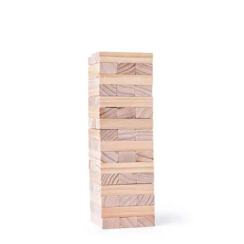
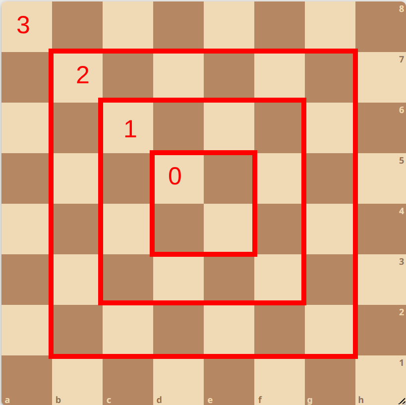

x y
Stroia are două numere naturale, x și y. El vrea să afle produsul lor.
Folosiți operatorul *.
5 3
2
6 7
2
0 0
2
p
Rick Astley a făcut prea multe farse, și primește amendă 10 lei pentru fiecare farsă.
Cât trebuie să plătească dacă a făcut p farse?
10
2
0
2
7
2
p m
Balerina Capucina a făcut un aprozar.
Ea vinde portocale la 3 lei și mere la 4 lei.
Dacă a vândut p portocale și m mere, câți bani a făcut?
5 3
2
0 0
2
10 2
2
b c
Măr a deschis un magazin de dulciuri.
El vinde bomboane cu 2 lei și ciocolată cu 5 lei.
Dacă a vândut b bomboane și c ciocolate, câți bani a strâns?
3 2
2
0 0
2
5 5
2
a b c
Doge face un picnic și pregătește sandvișuri.
Folosește pâine cu 1 leu, brânză cu 3 lei și șuncă cu 4 lei pe sandviș.
Dacă face a sandvișuri cu pâine, b cu brânză și c cu șuncă, cât cheltuiește?
2 3 1
2
0 0 0
2
5 0 2
2
t p
Trollface vinde bilete la un concert.
Bilet normal costă 20 lei și VIP 50 lei.
Dacă vinde t bilete normale și p bilete VIP, cât face total?
3 2
2
0 0
2
5 5
2
x y
Ceapă se duce la cafenea.
Cafeaua simplă costă 5 lei, iar cappuccino 8 lei.
Dacă ia x cafele simple și y cappuccino, cât plătește?
2 3
2
0 0
2
1 1
2
m c s
Shrek a deschis un fast-food în Pădurea Vrăjită.
Burgerii sunt 7 lei, cartofii prăjiți 3 lei și sucul 2 lei.
Dacă vinde m burgeri, c cartofi și s sucuri, câți bani face în total?
2 3 4
2
0 0 0
2
5 0 2
2
x y
La un test, elevul primește 3 puncte pentru fiecare răspuns corect și pierde 1 pentru fiecare răspuns greșit.
Dacă Andrei a făcut x exerciții corect și y exerciții greșit, câte puncte a primit.
6 7
2
0 0
2
5 0
2
a b
La un concurs sportiv, sunt în total a ținte și Radu a ratat b ținte.
Dacă pentru fiecare țintă lovită primește 5 puncte, câte puncte are în total?
Folosește paranteze!
10 5
2
10 2
2
5 0
2
p q
Andrei are o tabletă de ciocolată Milka, care are p rânduri și q coloane.
Câte pătrățele de ciocolată are tableta?
10 5
2
n
Câte pătrățele sunt pe o tablă de șah de latură n?
10
2
n
Câte pătrățele sunt pe o tablă de șah de latură 2 * n?
10
2
n
Câte pătrățele albe sunt pe o tablă de șah de latură 2 * n?
Indiciu: jumătate din pătrățele sunt albe.
10
2
n
Doge se joacă Jenga, și a construit un turn simplu, încă nu s-au apucat să mute piesele.
Câte piese sunt într-un turn de Jenga simplu de înălțime n?
Turnul din imaginea de mai jos este de înălțime 16, de exemplu, și are în total 48 de piese.

8
2
n
Magnus Carlsen s-a apucat să joace șah pe o tablă infinită.
O tablă de șah infinită are un centru, de patru pătrate, numim inelul 0.
În jurul centrului, formăm mai multe inele. Fiecare inel înconjoară inelul anterior, cum apare în exemplu.
Inelul 0 are 4 pătrate, inelul 1 are 12 pătrate, inelul 2 are 20, inelul 3 are 28 și așa mai departe.
Câte pătrățele are inelul n?
Indiciu: Ce observăm în șirul 4, 12, 20, 28...?

4
2